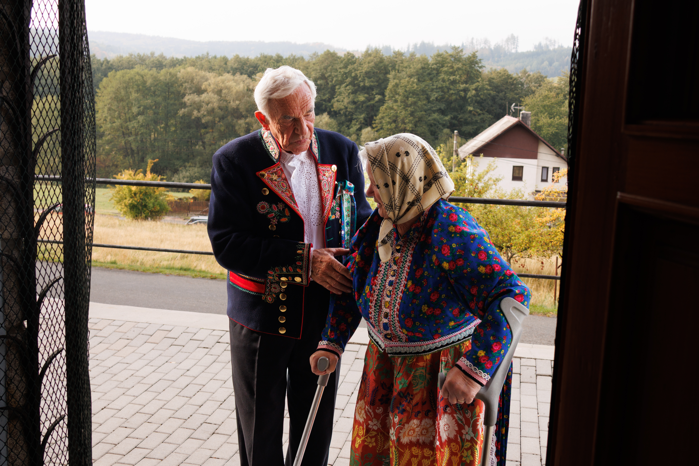
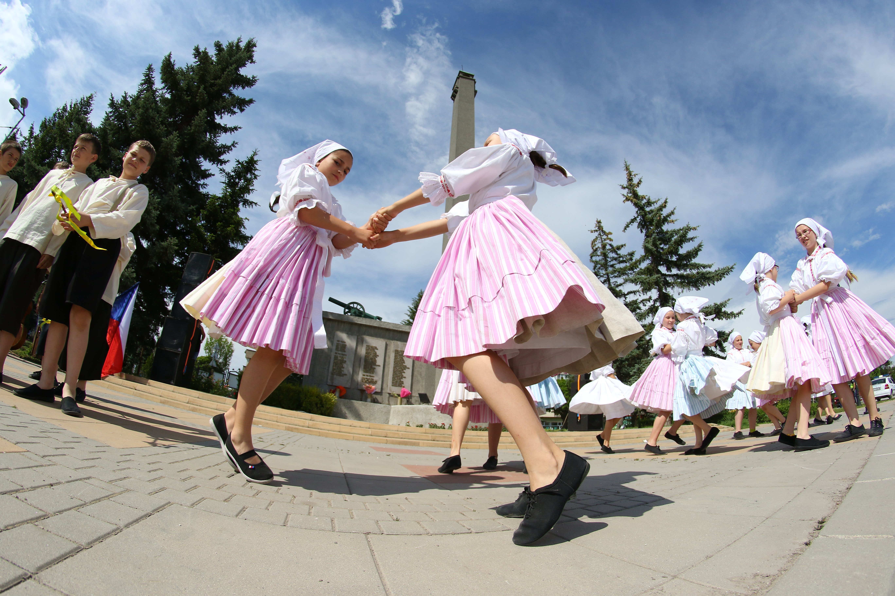
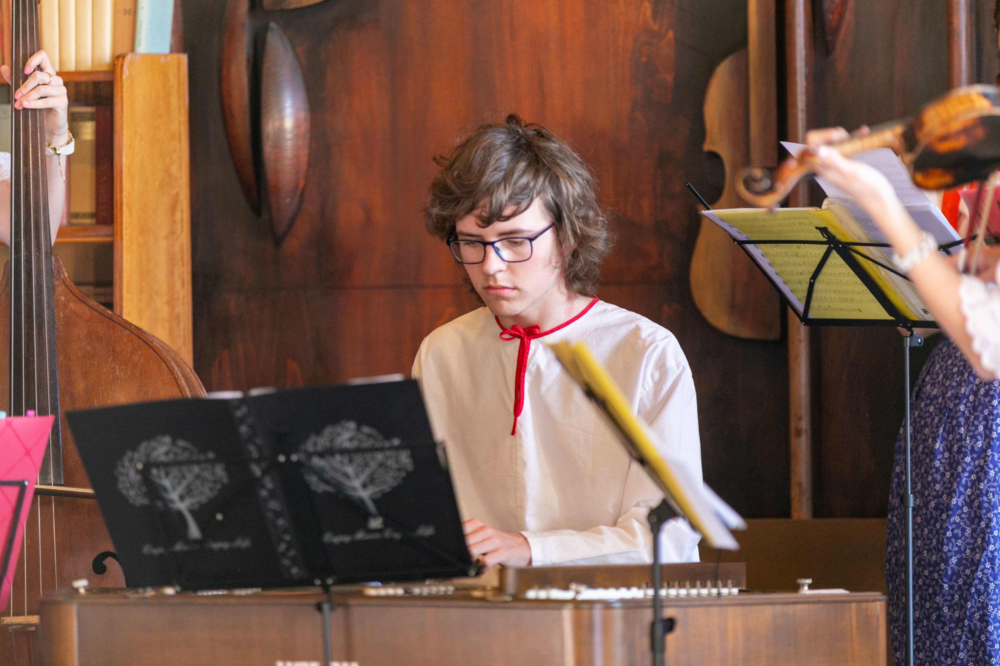
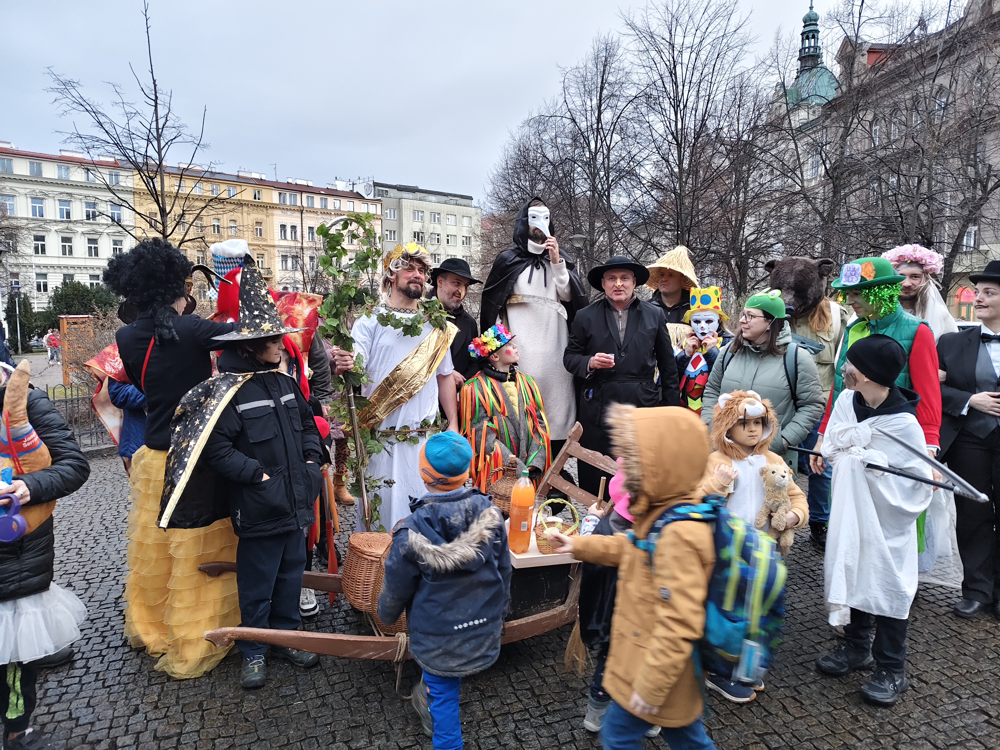
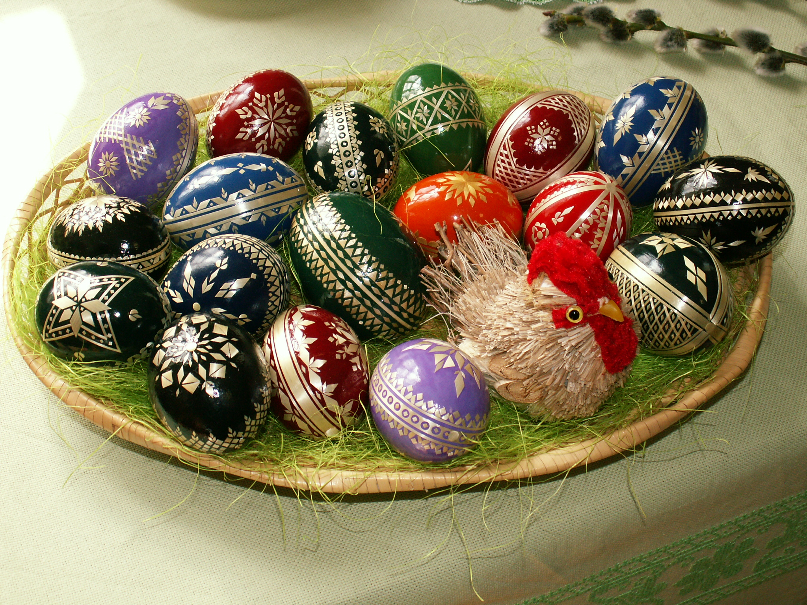
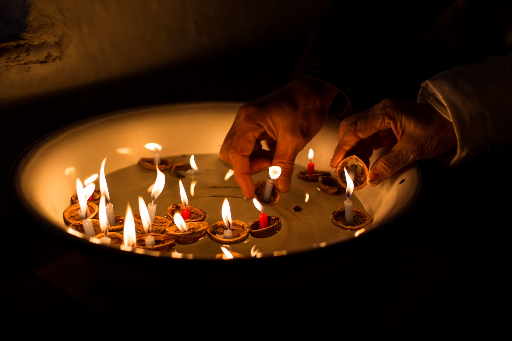
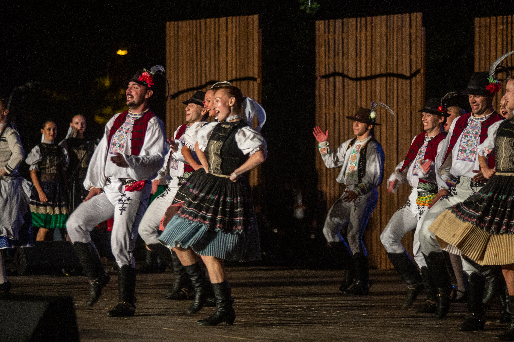

Traditional Folk Costumes
Czech folk costumes are known for their colorful embroidery, detailed patterns and regional differences. They are still worn during folk festivals, celebrations and traditional dances.

Discover the traditions, festivals and folk culture that have shaped Czechia throughout generations.
Czech traditions are an important part of the country's cultural identity. From colorful folk costumes and traditional dances to seasonal celebrations and local festivals, these customs bring communities together and keep generations of history alive.
Explore the customs, celebrations and cultural expressions that have been passed down through generations across Czechia.

Czech folk costumes are known for their colorful embroidery, detailed patterns and regional differences. They are still worn during folk festivals, celebrations and traditional dances.

Traditional Czech folk music often features violins, bagpipes and the cimbalom. Folk dances such as the polka are an important part of festivals and regional celebrations.

Masopust is a traditional carnival celebration held before Lent. Colorful masks, costumes, music and lively parades fill Czech towns and villages with festive atmosphere.

Czech Easter traditions include beautifully decorated eggs called kraslice, handmade decorations and the traditional pomlázka. These customs are an important part of spring celebrations across the country.

Czech Christmas is celebrated with traditions such as decorating Christmas trees, baking traditional cookies and enjoying a festive dinner on Christmas Eve. Many families also follow customs passed down through generations.

Throughout Czechia, regional festivals celebrate local history, music, food and traditional crafts. Events such as the Chodsko Festival and Slovácko celebrations help preserve the country's rich cultural heritage.
Czech traditions continue to connect people with their history and local communities. Through festivals, music, dances and seasonal celebrations, these customs remain an important part of Czech cultural identity and are passed on to future generations.